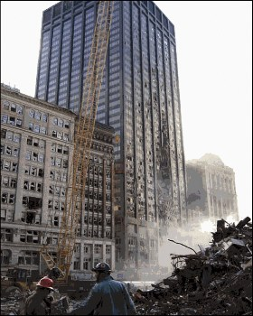
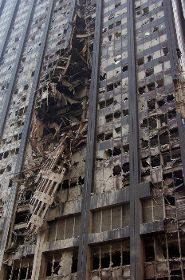

| Bottom | homepage |
|
|
|
|
|
Why Indeed |
|
|
Anomalies at the WTC and the Hutchison Effect
(page 3)
by
Dr. Judy Wood and John Hutchison
This page last updated, April 1, 2008(Not-yet final; minor updates still being made.)
(originally posted: December 25, 2007)
| "15. Serious considerations should be given to the idea that exceeding a certain critical mass of any relatively pure material may result in a reaction that is not self-quenching." |
| Figure 94. by Richard Sparks, Scientific and Technical Intelligence/SBIR, Ottawa. I think I see where this one applies. As of December 2007, they were still changing dirt. (1996) Source: The Hutchison File, or archived (searchable) page 69 of 87. |
| Figure 95. 5159_moldy.jpg. (11?/?/01) Source |
Figure 96. New York, NY, March 15, 2002 -- A truck dumps debris into the bucket of a 500-ton floating crane located at FEMA's Pier 25 Loading Site, a few blocks from Ground Zero. (?/?/02) Source |
{kind=link}
| They officially said all fires were out at the 99-day mark. Here we are at the 6-month mark! Why is this truckbed and tailgate fuming? They officially said all fires were out at the 99-day mark. Here we are at the 6-month mark. The truck is dumping a load of fuming stuff. The stuff is covered with wet dirt. They are hosing it down as they dump it -- and its still fuming. The tailgate of the truckbed is swung open and is fuming with no water on it. The water appears to cut down on the fuming. If it were steam, we would see the opposite of this. Also, if it were hot, why didn't they hose it down and cool it off *BEFORE* they operated the hydraulics? ;-) * If it's hot enough to require hosing down, it's too hot for hydraulics. * If it's hot enough to require hosing down, why didn't they cool it off before operating the hydraulics? The front tires of the truck appear dry as well as the cab. The upper-front of the truck bed appears dry. The lower-right end of the truck bed appears wet. The hose-down appears to be just in one place (note water path in front of building on the right, and note the water pattern on the pavement) |
 |
 |
 |
|
| Figure 101. 011011_zero04.jpg. (10/31/01) Source |
Figure 100. 011031_pdrm1941.jpg (10/31/01) Source: |
Figure 102. Cotton Candy - mold. 011031_pdrm1955.jpg (10/31/01) Source |
Figure 102b. Near the bottom of GZ, it's a swamp, but is still fuming. source: page |
{kind=link}
| Figure 210a. Prior to building the WTC, the PATH trains used to go through the big bathtub into the small (east) bathtub. The figure below comes from a document where they were planning to build the WTC and locate the PATH train stating in the big (west) bathtub. They left the old terminal. Image204.jpg (?/?/?) Source: |
Figure 210b. The old PATH train station used to be below the area between the original WTC 4 & 5 and where the new Tower 3 is, including adjacent areas. wtc_new_map.jpg (01/?/07) Source: |
| Figure 211. Above shows where the PATH tracks were. Note, there wasn't dirt down there. That water looks kinda weird. 060400_DemoHM01.jpg (4/??/06) Source: |
Figure 212. 060400_DemoHM03.jpg (4/?/06) Source: |
Figure 214. 060400_BtubClean05.jpg (4/?/06) Source: |
Figure 213. 060400_BtubClean03.jpg (4/?/06) Source: |
 |
||
| Figure 100. June 2006, looking north in the big bathtub. The new WTC7 is in the distance, on the right. Here's why they need the dirt. Here's the type of "puff-ball poofing" we saw in October! 060600_PlatformD01.jpg (6/?/06) Source: |
Figure 101. September 2006 (cotton candy) Where did that dirt come from? 060900_HMdemo04.jpg (9/?/06) Source: |
Figure 102. September 2007. "'As we got deeper and deeper there was a lot more rock that had to be blasted and broken up," he said. Officials said that the work on the 1,700-foot Freedom Tower is not affected by the problems at the Silverstein tower sites." In September 2007, Why are they taking dirt out? Where did the dirt come from? (9/?/07) Source: Quoted from article: (1/1/08) Source: (archived) |
| Figure 219. Ground Zero in October 2007. Where did all of the rich-brown dirt come from? Certainly it was not dug up. (10/20/07) Source: |
| Figure 3a. On Tuesday, there was a fresh new pile of dirt. It could have been potting soil or topsoil. Why was it here? If this construction was for the foundation of a new building, what is the dirt for? (10/09/07) Source |
Figure 3b. Another visitor to the site was asked, "Why are they bringing this dirt in?" The visitor answered, "They're not brining it in, they're digging it up." How can you get dirt from bedrock? (10/09/07) Source |
Figure 6. By three days later (Friday), the dirt pile was gone. (10/12/07) Source |
| Figure 15b. Dump truck being hosed down before leaving the site. (10/12/07) Source |
Figure 11. Yellow rubber hazmat suit? It's about 75°F, clear blue sky. Why the mutual hoze-down job? (10/12/07) Source |
Figure 1. Why is this guy wearing a rubber hazmat suit? (10/12/07) Source |
Fuming Wire Top
| Figure 103. 28cm_arc.jpg. (?/?/?) Source: blog |
Figure 104. 28cm_arc2.jpg. (?/?/?) Source: blog |
 |
|
| Figure 105. Spark100kV_small.jpg. (?/?/?) Source: blog |
Figure 106. HV100kvbigresspark1_small.jpg. (?/?/?) Source: blog |
Ongoing Rapid Rusting Top
Across from WTC7
| Figure 240. June 2006 060600_RampJ02.jpg (6/?/06) Source: |
Figure 241. Infected beams removed 060600_RampJ01.jpg (6/?/06) Source: |
Figure 253. 070600_Npathstrstmp01.jpg (06/?/07) Source: |
Figure 254. 070600_Npathstrstmp02.jpg (06/?/07) Source: |
| Figure 255. 070600_Npathstrstmp03.jpg (06/?/07) Source: |
Figure 256. 070600_Npathstrstmp04.jpg (06/?/07) Source: |
Figure 257. 070700_Npathstrstmp02.jpg (07/?/07) Source: |
| Figure 266. 070800_Npathstrstmp01.jpg (08/?/07) Source: |
Figure 267. 070900_Npathstrstmp02.jpg (09/?/07) Source: |
Figure 267a. 070900_Npathstrstmp04.jpg (09/?/07) Source: |
| Figure 220. skyview.jpg (before to 9/11/01?) Source: |
Bankers Trust (Deutsche Bank) Top
Perhaps this is why they poofed WTC7?
 |
 |
|||
| Figure aaab. Bankers Trust Building on Liberty Street, across from WTC2. (FEMA picture) | Figure 112. Photo from soon after 9/11. wtc_24_big.jpg (09/?/01) Source: |
Figure 113. Being repaired: November 3, 2003 031103_06AbandonedDeutscheB.jpg (03/03/03) Source: |
Figure 2c. Fixed 060728_IMG_1701_edit.jpg (07/28/06) Source |
| Figure 109. This is Bankers Trust being taken apart. Recognize any "rustification" out there? There seems to be a trend for where the really furry-looking rust is. (WTC2 was across the street, to the right of where the first photo was taken.) That red furry-looking beam in the senter of the photo is incredible! How many years at the bottom of the ocean would be required to to that? 17bank_CA07.jpg (01/07) Source: |
Figure 110. 17bank_CA08.jpg (01/?/07) Source: |
Figure 110. Where's the rust on the old beams in this first photo, foreground? 17bank_CA06.jpg (?/?/07) Source: |
Disintegrating Beams? Top
| Figure 268. Why is this inspection being done with white hazmat suits? This is the region where the old PATH terminal was. 061200_HMdemo03.jpg (12/06) Source: |
Figure 269. The old PATH train station used to be below the area between the original WTC 4 & 5 and where the new Tower 3 is, including adjacent areas.. wtc_new_map.jpg Source: |
| Figure 262. 070400_pathentmove01.jpg (04/07) Source: |
Figure 263. 070400_pathentmove02.jpg (04/07) Source: |
Figure 264. 070400_pathentmove03.jpg (04/07) Source: |
Figure 265. 070400_pathentmove04.jpg (04/07) Source: |
| Figure 249. 070500_pathstrstmp02.jpg (05/07) Source: |
Figure 250. 070500_pathstrstmp03.jpg (05/07) Source: |
Figure 251. 070500_pathstrstmp01.jpg (05/07) Source: |
Figure 252. 070500_pathstrstmp04.jpg (05/07) Source: |
| Figure 249a. 070600_pathstrstmp01.jpg (06/07) Source: |
Figure 250a. 070600_pathstrstmp02.jpg (06/07) Source: |
Figure 251a. 070600_pathstrstmp03.jpg (06/07) Source: |
Figure 252a. 070600_pathstrstmp04_s.jpg (06/07) Source: |
Extraordinary rusting in only a few months.
| Figure 117. (10/09/07) Source |
Figure 118. (10/09/07) Source |
Figure 119. (10/09/07) Source |
Continuing Degradation Top
To be added: Photos from January 2008. The degredation continues.
|
Continue to next page.
|
| Top | homepage |
|
|
|
|
|
Why Indeed |
|
|
|